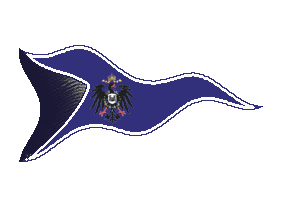
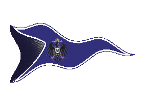

| Übersicht,
Anschläge und Stammtisch (RPG) |
|
Catch me if u can
|
| Medli Goll (RIP) |
wer mich fängt(stell dich auf mein feld,mach eine kampfrunde OHNE MAGIE(!!!)),der bekommt 200k gs von mir!
Medli Goll
Zur 17. Stunde am 62.Erntemond im Jahre 422 |
24.11.05 15:31
 |
|
| Medli Goll (RIP) |
übrigens:nur wer angemeldet ist,der darf das auch.
How to?
Einfach namen hier eintragen.
Medli Goll
Zur 18. Stunde am 62.Erntemond im Jahre 422 |
24.11.05 15:34
|
|
| Shaina Amitola (RIP) |
*lacht*
Warum das denn?
Shaina Amitola
Zur 18. Stunde am 62.Erntemond im Jahre 422 |
24.11.05 15:35
|
|
| Calypso (RIP) |
solang es keine Anmeldegebühr gibt bin ich dabei!
Kann ja nicht schaden... ;)
Calypso
Zur 18. Stunde am 62.Erntemond im Jahre 422 |
24.11.05 15:36
|
|
| Medli Goll (RIP) |
wozu?einfach so,ich hab vielzuviel geld,soviel geb ich im leben nicht aus,ausserdem hab ich was zu tun dann...
Medli Goll
Zur 18. Stunde am 62.Erntemond im Jahre 422 |
24.11.05 15:38
|
|
| Medli Goll (RIP) |
anmeldeschluss ist der erste dezember,ende der aktion ist silvester(verlängerungen nicht unmöglich!)
Medli Goll
Zur 18. Stunde am 62.Erntemond im Jahre 422 |
24.11.05 15:40
|
|
| Shaina Amitola (RIP) |
*schmunzelt*
Na dann viel Spass, würde ja gern mitmachen, aber ich möchte nicht in den Tempel geschickt werden.
Aber Geld kann ich immer gut gebrauchen und Schmiede und Burg weiterauszubauen.*lächelt*
Shaina Amitola
Zur 18. Stunde am 62.Erntemond im Jahre 422 |
24.11.05 15:44
|
|
| Daven Kaicles (RIP) |
24.11.05 15:52 Konflikt Rattenmeute hat Medli Goll besiegt! - sie haben gewonnen
Daven Kaicles
Zur 19. Stunde am 62.Erntemond im Jahre 422 |
24.11.05 15:57
|
|
| Shaina Amitola (RIP) |
Melde mich doch mal an. *schmunzelt*
Shaina Amitola
Zur 19. Stunde am 62.Erntemond im Jahre 422 |
24.11.05 15:59
|
|
| Fenvarien Despirae (RIP) |
melde mich hiermit an.
schon mal ein anhaltspunkt wo du dich aufhälst?
Fenvarien Silberpfeil,
Priester im Dienste des einzig wahren Glaubens an Urvan
Zur 20. Stunde am 62.Erntemond im Jahre 422 |
24.11.05 16:06
|
|
| Marc Aurel (RIP) |
Mom sicher noch in einem Tempel. *;D*
Baron Marc Aurel,
Vorsteher von Magesh
Zur 21. Stunde am 62.Erntemond im Jahre 422 |
24.11.05 16:29
|
|
| Huebich von Antin (RIP) |
Bekommen die Ratten nun auch das Preisgeld ??
Sir Huebich,
Verlobter der reizenden Linas,
Schmiedemeister zu Caras Galadhon
Zur 4. Stunde am 63.Erntemond im Jahre 422 |
24.11.05 18:03
|
|
| Sophia (RIP) |
Ich melde mich auch
Sophia
Zur 4. Stunde am 63.Erntemond im Jahre 422 |
24.11.05 18:04
|
|
| Lilokel ok Schnjokel (RIP) |
Wenn ich statt einer Kampfrunde auch ein markiertes Wurstbrot in deine Tasche stecken kann, meld ich mich auch mal an *g*
Lady Lilokel ok Schnjokel,
Vorsteherin von Fjortisár,
Anführerin der glorreichen Nation "Toppelmopfer Topfenmoppler",
Ehefrau des ehrenwerten Fjokel ok Schnjokel,
Kapitänin der "Wichtelwolke"
Zur 6. Stunde am 63.Erntemond im Jahre 422 |
24.11.05 18:26
|
|
Tar Aldarion
  |
melde mich auch mal, kann ja nicht schaden ;)
Tar Aldarion,
Priester im Dienste des einzig wahren Glaubens an Urvan
Zur 8. Stunde am 63.Erntemond im Jahre 422 |
24.11.05 18:53
|
|
| Elektra de Arsakes (RIP) |
Muss man euch zu Gaia schicken od. einfach nur einmal möglichst sanft draufhaun? *interessiert schau*
Elektra de Arsakes,
Hohepriesterin im Dienste des einzig wahren Glaubens an Urvan,
Bezwingerin der Nerven
Zur 20. Stunde am 63.Erntemond im Jahre 422 |
24.11.05 21:46
|
|
Turiandor Dragus
|
Meld mich auch an *gg*
Baron Turiandor,
Vorsteher von Asgards Gate
Zur 22. Stunde am 63.Erntemond im Jahre 422 |
24.11.05 22:06
|
|
| Cwlvyn ab Dhwron (RIP) |
da bin ich auch dabei ... aber das mit ohne magie und nur eine Runde ..... na ich weiss net ;)
Sir Amorous Meara,
Ehemann der reizenden Amalia Meara
Zur 2. Stunde am 66.Erntemond im Jahre 422 |
25.11.05 10:24
|
|
| Davatar (RIP) |
bin dabei.
Davatar
Zur 3. Stunde am 66.Erntemond im Jahre 422 |
25.11.05 10:38
|
|
| Bratislav Gonzales (RIP) |
Bekommt man für 10 Runden den 10fachen Gewinn?
Naja, ich melde mich auch mal an.
Bratislav Gonzales,
Hohepriester im Dienste des einzig wahren Glaubens an Bendur,
Kartograph
Verkünder des Glaubens an Bendur
Zur 4. Stunde am 66.Erntemond im Jahre 422 |
25.11.05 10:46
|
|
| Gueldensteining (RIP) |
Also ich glaube zwar nicht das ich Euch treffe,
aber Anmelden schadet ja nicht. *meld*
Sir Gueldensteining,
Vorsteher von Opelê in aina Tura,
Kardinal im Dienste des einzig wahren Glaubens an Maki
Zur 5. Stunde am 66.Erntemond im Jahre 422 |
25.11.05 10:59
|
|
| Abn el Gurk Fuddel II (RIP) |
Ok, ich bin dabei - aber traut Euch nicht, einfach in der ersten Runde wegzusterben ...
Freiherr Abn el Gurk Fuddel II,
Vorsteher von Sturmklippe,
Priester im Dienste des einzig wahren Glaubens an Urvan
Zur 8. Stunde am 66.Erntemond im Jahre 422 |
25.11.05 11:50
|
|
| Bopla de Soto (RIP) |
*lacht*
Mann, muss Euch langweilig sein! ;o)
Baron Bopla de Soto,
Vorsteher von Sündenpfuhl,
Medicus der Alten Garde,
Ehemann der reizenden Sinanya
Zur 9. Stunde am 66.Erntemond im Jahre 422 |
25.11.05 11:59
|
|
| Medli Goll (RIP) |
jo,is auch...
die ratten hab ich mich ins nest verklickt...
einfach nur einmal draufhauen,oder,wenn möglich,auch nur was markiertes zustecken.
anhaltspunkt ist unser nationsgebiet,ferner die gesamte südliche lagerinsel,ferner die gesamte insel der hoffnung.
Medli Goll
Zur 22. Stunde am 66.Erntemond im Jahre 422 |
25.11.05 15:06
|
|
| Tharala Valafey (RIP) |
hmm mal gucken ob Du zu finden bist *schmunzelt*
Baronesse Tharala Valafey,
Vorsteherin von Arx ars Bellica,
Prophetin im Dienste des einzig wahren Glaubens an Pheron,
Funkenmagierin der Academia ars Arcana
Zur 2. Stunde am 67.Erntemond im Jahre 422 |
25.11.05 15:57
|
|
| Susanna (RIP) |
"was markiertes zustecken."?
*grübelt*
Susanna
Zur 2. Stunde am 67.Erntemond im Jahre 422 |
25.11.05 16:00
|
|
| Coran (RIP) |
Nationsgebiet ? Medli kann es sein das du unfair spielst ? *grinst*
Coran,
Verlobter der reizenden Obscurata
Zur 4. Stunde am 67.Erntemond im Jahre 422 |
25.11.05 16:20
|
|
| Shaina Amitola (RIP) |
Medli, Ihr seit wirklich unfair*schmunzelt*
vielleicht ist dort alles mit Türmen abgeriegelt und nur Eure Nationsbrüder- und Schwestern haben eine Chance.
Shaina Amitola
Zur 5. Stunde am 67.Erntemond im Jahre 422 |
25.11.05 16:44
|
|
| Karhu Karijalan (RIP) |
*anmeldet* hey brati wollen wir mal zusammen auf die suche..... zu zweit mit paar flaschen rum macht es doch auch mehr spass... :)
Sir Karhu Karijalan
Zur 6. Stunde am 67.Erntemond im Jahre 422 |
25.11.05 16:52
|
|
| Tharala Valafey (RIP) |
abgeriegelt ist bei uns tatsächlich so ziemlich alles, allerdings ist Medli fast pausenlos auf Tour, die Chancen stehen nicht schlecht für alle.
Liebe Grüße,
Baronesse Tharala Valafey,
Vorsteherin von Arx ars Bellica,
Prophetin im Dienste des einzig wahren Glaubens an Pheron,
Funkenmagierin der Academia ars Arcana
Zur 8. Stunde am 67.Erntemond im Jahre 422 |
25.11.05 17:27
|
|
| Cadhar (RIP) |
na dann meld ich mich auch mal an ...
Sir Cadhar
Zur 9. Stunde am 67.Erntemond im Jahre 422 |
25.11.05 17:38
|
|
| Ogrim Doomhammer (RIP) |
Oki ich mich auch!
Ogrim Doomhammer,
Kardinal im Dienste des einzig wahren Glaubens an Pheron,
Ehemann der reizenden Bithya
Zur 12. Stunde am 68.Erntemond im Jahre 422 |
25.11.05 23:51
|
|
| Jegor Bor Somar (RIP) |
Bei dem Spaß mach ich mit bin dabei.
Jegor Bor Somar,
Kardinal im Dienste des einzig wahren Glaubens an Urvan,
stellv. Nationsführer,
Kartograph,
Ehemann der reizenden Nynaeve
Zur 23. Stunde am 69.Erntemond im Jahre 422 |
26.11.05 8:02
|
|
| Silèneanè von Satamylo (RIP) |
*anmeld*
und Medli, tu mir den Gefallen und lauf nicht zu schnell, du weißt ja, alte Halbelfinen kommen schnell ausser Puste
Freifrau Silèneanè von Satamylo,
Vorsteherin von Feste Wiwileth,
Hohepriesterin im Dienste des einzig wahren Glaubens an Pheron,
Muse des Chaos,
Kartograph
Zur 4. Stunde am 70.Erntemond im Jahre 422 |
26.11.05 9:06
|
|
| Titania Greenleafxxx (RIP) |
Da melde ich mich auch an, vielleicht treffe ich unterwegs ja alte Halbelfen..
Markgräfin Titania Greenleaf,
Vorsteherin von Isengard,
Ehefrau der reizenden Sionnach Arolis Greenleaf,
Aussenministerin des Volks von Lothien
Zur 6. Stunde am 70.Erntemond im Jahre 422 |
26.11.05 9:36
|
|
Klaus Störtebeker
  |
Na, vielleicht erspähe ich Euch ja, um ´ne Buddel Rum zuzustecken, also melde ich mich auch mal an
Freiherr Klaus Störtebeker,
Vorsteher von Catalia,
Hohepriester im Dienste des einzig wahren Glaubens an Bendur,
Kapitän des Roten Teufels
Zur 15. Stunde am 72.Erntemond im Jahre 422 |
26.11.05 23:04
|
|
Alessa Imret Eilistraee
  |
Klingt als könnte es spaßig werden...
ich bin dabei *leise lacht*
Lady Alessa Imret Eilistraee,
Ehefrau des ehrenwerten VitaminC
Zur 18. Stunde am 72.Erntemond im Jahre 422 |
26.11.05 23:44
|
|
Otin ni Shim
  |
Habe ich das richtig gelesen, man muss nur einen Nachweiß erbringen Euch gesichtet zu haben und es reicht wenn Ihr das wisst? Man muss Euch oder Eure Begleiter dafür aber nicht verletzen?
Wen dem so ist,dann melde ich mich auch bei Eurem kleinen Versteckspiel an
Otin ni Shim
Zur 8. Stunde am 75.Erntemond im Jahre 422 |
27.11.05 14:06
|
|
| encalion béliar (RIP) |
*anmeld* AAA hauen und auchnoch Geld bekommen :)
Wird das Angebot vielleicht auf alle Nationsmitglieder ausgedehnt? *g*
Sir encalion béliar,
Vorsteher von Esturia Draconis,
Hohepriester im Dienste des einzig wahren Glaubens an Pheron,
Ehemann der reizenden Feniá Aducirièl
Zur 16. Stunde am 75.Erntemond im Jahre 422 |
27.11.05 15:56
|
|
| Killua (RIP) |
*auch anmeld* =)
Killua
Zur 23. Stunde am 75.Erntemond im Jahre 422 |
27.11.05 17:44
|
|
| Kedyn Adrogan (RIP) |
*anmeld*
@ Encalion find doch erstmal medli ;)
Kedyn Adrogan,
Hohepriester im Dienste des einzig wahren Glaubens an Urvan
Zur 24. Stunde am 76.Erntemond im Jahre 422 |
27.11.05 17:59
|
|
| Bithya Mordwingârd (RIP) |
Ui doll, witzige Aktion *anmeld*
Bithya Doomhammer,
Hohepriesterin im Dienste des einzig wahren Glaubens an Tura,
Ehefrau des ehrenwerten Ogrim Doomhammer
Zur 9. Stunde am 76.Erntemond im Jahre 422 |
27.11.05 20:04
|
|
| Trivial aka Asgard vdW (RIP) |
hmm, auch wenn ich selten weit reise...
*ausgefüllte anmeldung abgibt*
Trivial,
Führer der Wilden Jagd
Zur 10. Stunde am 76.Erntemond im Jahre 422 |
27.11.05 20:08
|
|
| Medli Goll (RIP) |
*hüppelt überall herum*
Medli Goll
Zur 20. Stunde am 7.Dunkelfrost im Jahre 422 |
02.12.05 20:13
|
|
| Medli Goll (RIP) |
hauen is nich zwang...
Hinweis für jetzt:LW
Medli Goll
Zur 20. Stunde am 7.Dunkelfrost im Jahre 422 |
02.12.05 20:15
|
|
| Raphael (RIP) |
Ich melde mich auch einmal an... *legt sich eine kleine übelrebensration bereit*
Wir treffen uns auf einer AAA-Stadt deiner Wahl...
Raphael,
Vorsteher von Bendurs Geheiligte Hallen,
Kardinal im Dienste des einzig wahren Glaubens an Bendur,
Alveranischer Meister der Seefahrt und Fischerei
Zur 21. Stunde am 7.Dunkelfrost im Jahre 422 |
02.12.05 20:21
|
|
| Medli Goll (RIP) |
!!!
was denkst du?
das ist ein suchspiel,keine kampfvereinbarung damit jeder mich findet...
Medli Goll
Zur 21. Stunde am 7.Dunkelfrost im Jahre 422 |
02.12.05 20:26
|
|
| Shadhan (RIP) |
Ich meld mich an...
Sir Shadhan
Zur 21. Stunde am 7.Dunkelfrost im Jahre 422 |
02.12.05 20:27
|
|
| Medli Goll (RIP) |
ahaaaaaa,da bissu also.
MedliIstOffline.
Medli Goll
Zur 21. Stunde am 7.Dunkelfrost im Jahre 422 |
02.12.05 20:29
|
|
| Medli Goll (RIP) |
die morgendliche tagesrunde ist zuende.
die nächste ist heut abend.
Medli Goll
Zur 3. Stunde am 11.Dunkelfrost im Jahre 422 |
03.12.05 14:39
|
|
| encalion béliar (RIP) |
Würde momentan auf Tempel Lager West tippen :)
Sir encalion béliar,
Vorsteher von Esturia Draconis,
Hohepriester im Dienste des einzig wahren Glaubens an Pheron,
Anführer der glorreichen Nation "Volk von Esturia Draconis",
Ehemann der reizenden Feniá Aducirièl,
Geissel des grauen Volks
Zur 4. Stunde am 11.Dunkelfrost im Jahre 422 |
03.12.05 14:44
|
|
MADshadowman von Tacheless
   |
also ich würde noch mitmachen, würde dir aber auch nur was zustecken, wenns recht ist.
Sir MADshadowman,
Priester im Dienste des einzig wahren Glaubens an Pheron,
Ehemann der reizenden Mailin
Zur 18. Stunde am 11.Dunkelfrost im Jahre 422 |
03.12.05 18:06
|
|
| Raphael (RIP) |
Nein Medli...Ein Kampf würds eh nicht werden...Ich würd dir ne Überlebensration an den Kopf werfen...Das sollte schon reichen...
Raphael,
Vorsteher von Bendurs Geheiligte Hallen,
Kardinal im Dienste des einzig wahren Glaubens an Bendur,
Alveranischer Meister der Seefahrt und Fischerei
Zur 4. Stunde am 12.Dunkelfrost im Jahre 422 |
03.12.05 20:25
|
|
| Daromir S. Cobar (RIP) |
Vorsicht Raphael. Manchmal glaube ich, Medli hat schon eine Ration zu viel an den Kopf bekommen *lach*
Daromir Flaischklopfer,
Priester im Dienste des einzig wahren Glaubens an Pheron
Zur 5. Stunde am 12.Dunkelfrost im Jahre 422 |
03.12.05 20:33
|
|
| Medli Goll (RIP) |
wer sagt,er steckt mir was zu,ist mir lieber,als wenn er mich tempelt:_)
Ausfälle von fangrunden und sonstiges bitte in verständnis nehmen,medli ist RL im umzug.
Medli Goll
Zur 23. Stunde am 14.Dunkelfrost im Jahre 422 |
04.12.05 12:05
|
|
| Bopla de Soto (RIP) |
*lacht*
Das sieht man. Sein Porträt ist anscheinend schon im Umzugswagen... ;o)
Baron Bopla de Soto,
Vorsteher von Sündenpfuhl,
Medicus der Alten Garde,
Ehemann der reizenden Sinanya
Zur 9. Stunde am 19.Dunkelfrost im Jahre 422 |
05.12.05 12:53
|
|
| Medli Goll (RIP) |
merk ich auch...!
Medli Goll
Zur 24. Stunde am 24.Dunkelfrost im Jahre 422 |
06.12.05 20:19
|
|
| Medli Goll (RIP) |
medlis action is n monat länger,da solange off gewesen.
UUUUND:ihr könnt euch noch ne woche aneldsen,ich möcht n paar mehr scherbler.
Medli Goll
Zur 6. Stunde am 67.Dunkelfrost im Jahre 422 |
16.12.05 17:11
|
|
| Slobodan de Moré (RIP) |
Off? Aneldsen??
Slobodan de Moré,
Anführer der glorreichen Nation "Basic",
Redakteur des Scherbenboten,
Prophet im einzig wahren Glauben an sich selbst
Zur 7. Stunde am 67.Dunkelfrost im Jahre 422 |
16.12.05 17:25
|
|
| Medli Goll (RIP) |
*HUUUUUST*
Anmelden mein ich und Off=Offline,im gasthaus,schlafen,weg,finite,nuvo,nada,nix,futsch,kapiert?
Medli Goll
Zur 8. Stunde am 67.Dunkelfrost im Jahre 422 |
16.12.05 17:35
|
|
| DoomsdayProphet (RIP) |
Dezember? Sylvester?
Graf DoomsdayProphet,
Vorsteher von Gateway
Zur 22. Stunde am 68.Dunkelfrost im Jahre 422 |
17.12.05 2:35
|
|
Galaton Dragus
 |
Was solls..ich werde dich finden *anmeld*
Baron Galaton,
Vorsteher von Asgards Heaven
Zur 6. Stunde am 69.Dunkelfrost im Jahre 422 |
17.12.05 4:23
|
|
| Medli Goll (RIP) |
In einer anderen Dime4nsion(Tura ermöglicht es),sind das:
Dezember=eine zeit von 31 tagen.
Sylvester=Ein fest.
Medli Goll
Zur 12. Stunde am 75.Dunkelfrost im Jahre 422 |
18.12.05 14:59
|
|
| Sakuretsu van Graufurt (RIP) |
Auch anmeld*ins Schiff spring* schaden kanns nicht.
Sir Sakuretsu van Graufurt,
Vorsteher von Nordlicht,
Hohepriester im Dienste des einzig wahren Glaubens an Bendur
Zur 14. Stunde am 75.Dunkelfrost im Jahre 422 |
18.12.05 15:36
|
|
Rand alThor
  |
auch mal anmeld. falls ich dich zufällig sehe will ich das geld schon haben.
Sir Rand alThor,
Kommandant der Templer
Zur 9. Stunde am 80.Dunkelfrost im Jahre 422 |
19.12.05 18:34
|
|
| Esabelli (RIP) |
*anmeld*
Esabelli
Zur 12. Stunde am 84.Dunkelfrost im Jahre 422 |
20.12.05 17:44
|
|
| Medli Goll (RIP) |
NochNMonat
Ausserdem:Ihr sucht ja garnicht,erhöhung auf 400k gs
Medli Goll
Zur 10. Stunde am 11.Saatmond im Jahre 423 |
24.12.05 16:22
|
|
| Medli Goll (RIP) |
Tja,leute,der weihnachtsmann hat gewonnen:
1 Überlebensration erhalten!
1 Wurstbrot erhalten!
1 Zigarre erhalten!
2 Erfrischungstrank(mittel) erhalten!
Die Wichtel haben dir 100 Thaum geschenkt!
695 Goldstücke erhalten!
neeein,scherz!
Medli Goll
Zur 14. Stunde am 12.Saatmond im Jahre 423 |
24.12.05 23:04
|
|
| Titania Greenleafxxx (RIP) |
((100 Thaum? Mal Butter bei die Fische, die Zahl hast Du nachgebessert ;) ))
Wo hält der kleine Kerl sich denn derzeit auf?
Lady Titania Greenleaf,
Hohepriesterin im Dienste des einzig wahren Glaubens an Pheron,
Ehefrau der reizenden Sionnach Arolis Greenleaf
Zur 10. Stunde am 13.Saatmond im Jahre 423 |
25.12.05 3:45
|
|
Übersicht,
Anschläge und Stammtisch (RPG)
|